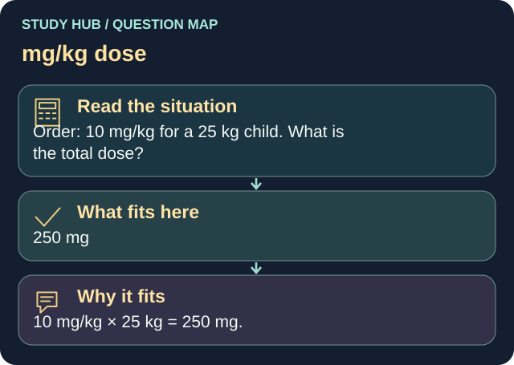

Order: 10 mg/kg for a 25 kg child. What is the total dose?
Answer
250 mg
Reasoning
10 mg/kg × 25 kg = 250 mg.
Why the other answers do not fit
- 100 mg
- 2.5 mg
10 mg/kg × 25 kg = 250 mg.
- 25 mg
10 mg/kg × 25 kg = 250 mg.
Shared reasoning for choices without a separate note: 10 mg/kg × 25 kg = 250 mg.
